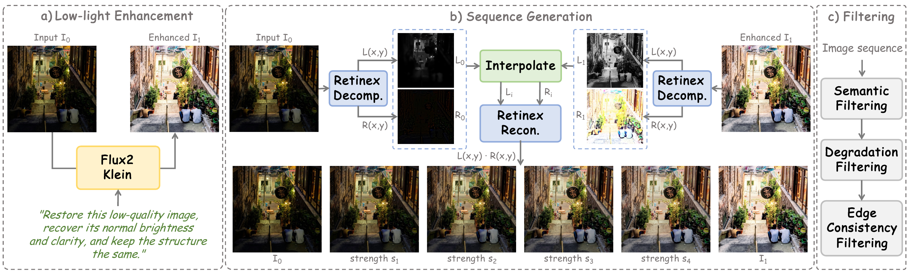
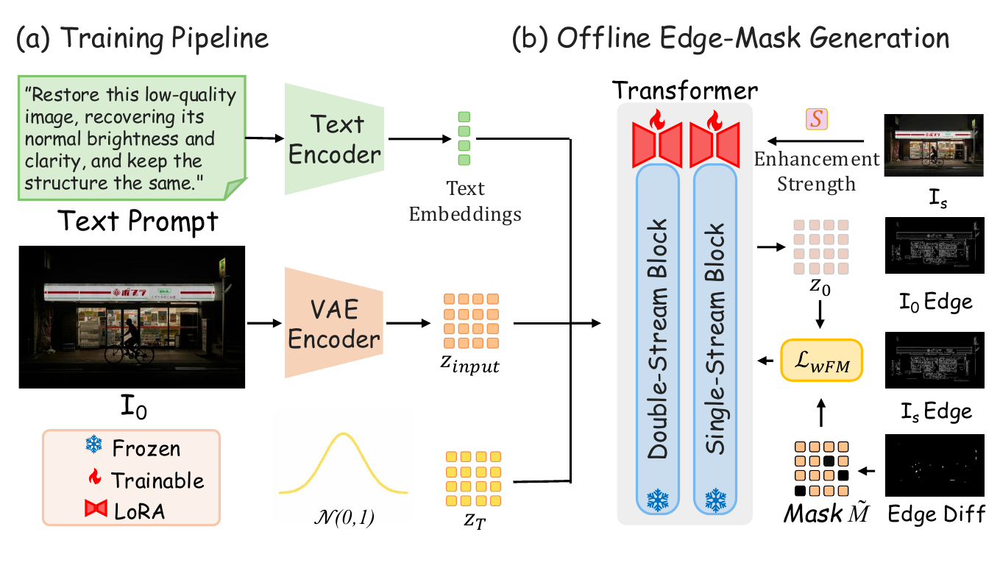

Overview
论文首页结构
Controllable
通过统一的强度滑杆表达从输入到增强的连续控制轴，让用户一眼看清不同强度下的恢复趋势。
Consistent
在不同亮度区间内尽量保持结构、身份和空间关系稳定，避免增强过程中出现不必要的内容漂移。
Generalizable
同一套展示同时覆盖室内、街景、雨夜、人像、群体与逆光场景，强调方法在多域低照图像上的泛化能力。
Pipeline
Method Pipeline
将你提供的论文 pipeline 图直接放在首页核心区，作为方法入口。

Framework
Training and Inference Framework
framework 图单独成节，方便论文读者从整体结构切换到模块关系理解。

Real Output
Actual ControlLight Comparison GIF
除了滑杆式主页展示，这里补充一张真实推理生成的 comparison GIF，直接展示输入与增强结果的逐强度变化。

Interactive Gallery
20-Image Homepage Showcase
使用你给出的苹果风格轻量滑杆样式。每张卡片独立控制，展示同一输入图像在连续增强强度下的视觉趋势。
Selected from curated low-light materials
10 environments · 10 portraits
Warm dark paper-page visual language